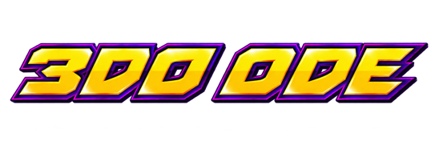
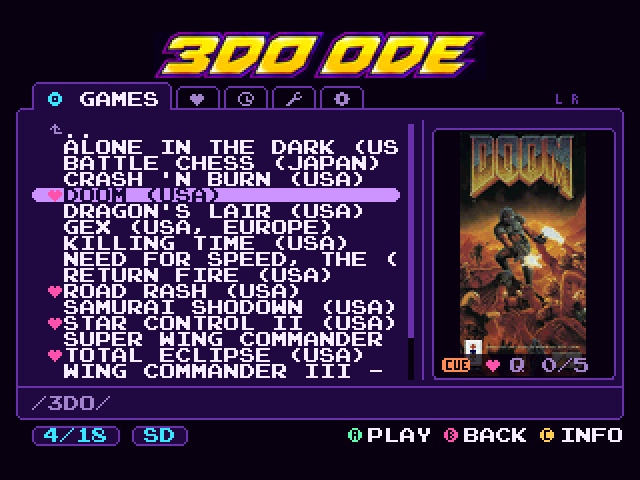
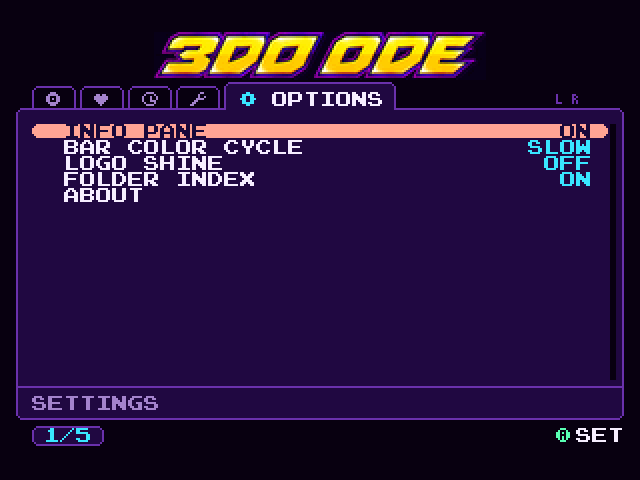
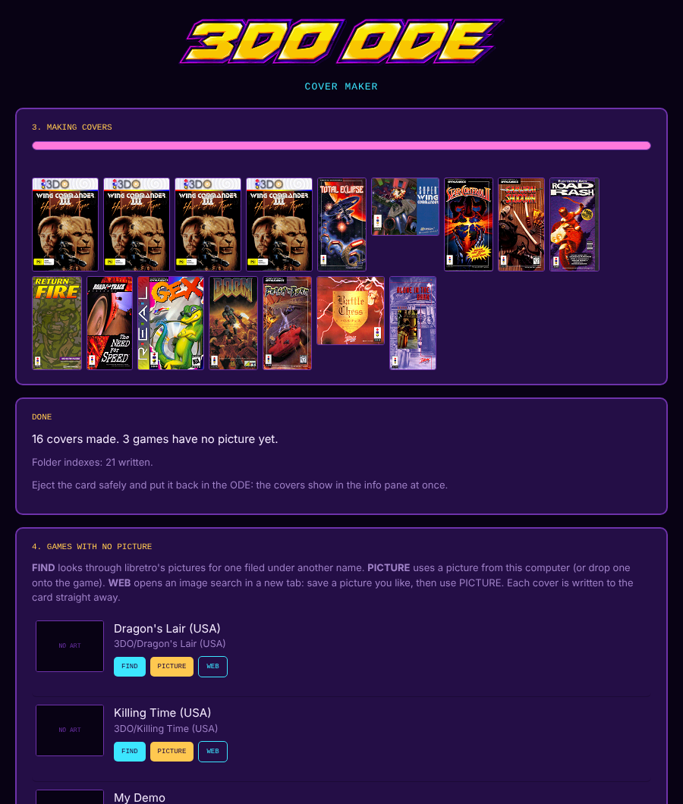

A better menu for 3DO optical drive emulators.
Fixel's FZ-1 ODE & XPort, and SataTo3DO-based clones. Free.
The Cover Maker runs in Chrome, Edge, Brave, Opera or Vivaldi on a computer. On Firefox or Safari, use the Python version instead.
A drop-in replacement for your ODE's menu: copy one boot.iso to your card and everything
else keeps working. Tabs for games, favorites and recent; box art in the info pane; folders and games sorted the
way you'd expect; and all the original tools. Games start exactly the way they do from the stock menu.
A cover for every game, made in a few clicks with the Cover Maker.
Your regulars one tab away, plus a play queue for multi-disc games.
Big folders open instantly after the first visit. Jump by letter, hold to scroll.
Colour themes, sound effects and a screensaver, all in Options.
Press X for a random game; hide demos and duplicates without deleting them.
Centred and full-speed on PAL consoles. All the original tools included.



boot.iso from Releases and copy it to the root of your card,
replacing the stock one. Keep the original so you can go back.| ODE | Status |
|---|---|
| Fixel's FZ-1 ODE (internal) | Tested |
| Fixel's XPort (external) | Tested |
| Clones with SataTo3DO-based firmware | Tested on one clone |
| Other clones | Most should work — see the notes |